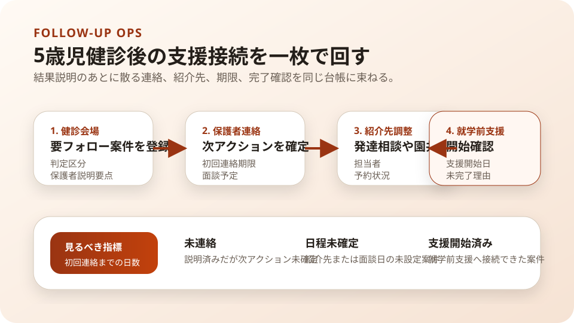

Question Note
5歳児健診後のフォローアップ漏れを減らす小規模サービス案

社会課題
5歳前後は、発達、言語、行動、集団参加の気づきが就学前支援につながる重要な時期です。こども家庭庁は、 5歳児健診の全国展開とフォローアップ体制整備を支援していますが、現場では結果説明、保護者連絡、紹介先 の確定、相談記録の共有が別々に動きやすく、支援開始までに時間差が出ます。
このメモで切り出すのは、5歳児健診で要フォローとなった家庭の就学前支援への接続と進捗確認 です。健診判定や医療判断そのものではなく、保健師、心理士、こども家庭センター、保護者の間で起きる 連絡の散逸を小さくする前提で考えます。
どの現場課題を切り出すか
| 現場課題 | 何が起きるか | 既存手段の限界 |
|---|---|---|
| 健診結果の説明と次の行動が分かれる | 保護者は説明を受けても、誰にいつ連絡するかが後回しになる。 | 紙の結果票だけでは、相談予約や紹介先との進捗まで追えない。 |
| 多職種の役割分担が見えにくい | 保健師、心理士、発達相談、園、教育側の確認が重複したり抜けたりする。 | 電話やメールでは、最終担当者と期限を一覧で持ちにくい。 |
| 就学前までの残り時間が短い | 支援開始が遅れると、園での観察共有や保護者面談が直前対応になる。 | 健診会場単位の運営メモはあっても、案件ごとの継続管理に弱い。 |
既存の仕組みで足りない点
- こども家庭庁の支援は厚くなっているが、自治体ごとの日々のフォローアップ運用は属人化しやすい。
- 健診会場で使う帳票と、その後の保護者連絡や紹介先確認の記録が別管理になりやすい。
- 特別な配慮が必要な児ほど個別対応が増え、通常の集団健診の流れだけでは追跡しづらい。
サービス案
5歳児健診後30日から90日のフォローアップに絞り、要フォロー家庭ごとの次アクション、紹介先、連絡履歴、 面談予定、完了条件を一つにまとめる自治体向けミニ台帳サービスです。
- 健診日、判定区分、保護者説明の要点、次回連絡期限を最小項目で登録する。
- 紹介先候補を「発達相談」「医療」「園共有」「経過観察」に分けて表示する。
- 電話、面談、文書送付、園からの返答を時系列で残す。
- 保健師向けに未連絡、日程未確定、支援開始済みを一覧で見せる。
- 月次で件数、初回連絡までの日数、支援開始率を簡易レポート化する。
100万円規模で考える初期市場
初年度は1市内の母子保健担当6チームと健診会場運営の関係者を到達可能市場とし、そのうち 6チームに導入、月10件前後のフォロー案件を整える前提にします。国の補助対象や体制整備の流れはあるため、 まずは「新制度対応の大規模調達」ではなく、現場の記録と進捗管理を軽くする補助ツールとして売る想定です。
| 項目 | 仮定 | 結果 |
|---|---|---|
| 到達可能市場 | 1市内6チーム | 母子保健、こども家庭センター、健診会場運営で説明可能な範囲 |
| 初年度導入 | 6チーム | 健診会場ごとに使い始めやすい小規模導入 |
| 月額利用料 | 8,000円 x 6チーム x 12か月 | 576,000円/年 |
| フォロー帳票パック | 18,000円 x 12回 | 216,000円 |
| 初期設定と研修 | 35,000円 x 6チーム | 210,000円 |
| 初年度売上予想 | 合計 | 1,002,000円 |
収益モデル
- 主収益: 母子保健担当チームごとの月額利用料
- 副収益: 健診後フォロー用の帳票整理、期限設計、紹介先リスト初期設定
- 副収益: 月次レポートと短時間の振り返り会の実施費
初期は成果報酬ではなく、健診後30日から90日の進捗管理を軽くする固定課金の方が、 自治体側の導入判断と予算説明をしやすいです。
必要なシステムと支出
| 領域 | 要件・使い道 | 年額の目安 |
|---|---|---|
| フロント | 保健師や会場担当がスマホとPCで案件一覧と期限を確認 | 0円〜 |
| バックエンド | 案件、連絡履歴、紹介先、担当、期限、完了状態を管理 | 42,000円 |
| 通知 | 未連絡案件や面談前確認をメール中心で送る | 18,000円 |
| 帳票・記録 | 結果説明メモ、紹介先一覧、月次レポートをPDF/CSVで出す | 18,000円 |
| 運用・専門確認 | ドメイン、バックアップ、個人情報整理、母子保健実務レビュー | 92,000円 |
| 年間支出 | 合計 | 170,000円 |
システム費は小さくても、実務レビューと個人情報の扱い整理は削らない前提にします。健診判定を自動化する サービスではなく、既存運用の記録整理と期限管理に役割を限定することで、過剰機能を避けます。
AIを使った開発見積もり
AIを使うと、帳票設計、進捗一覧、通知文、簡易レポート、研修資料の初稿づくりを短縮できます。一方で、 母子保健実務の用語整理、個人情報の範囲、紹介先の扱い、現場の入力負荷確認は人が詰める必要があります。
| 作業 | AIで短縮できること | 目安 |
|---|---|---|
| 要件整理 | 健診後フローをもとに、案件項目と期限ルールのたたき台を作る | 3〜5日 |
| プロトタイプ | 案件一覧、期限表示、紹介先管理、レポート画面を試作する | 1〜2週間 |
| 本実装 | 通知、権限、帳票、監査ログ、テストデータの整備を補助する | 2〜3週間 |
| 検証・修正 | 会場運用と事後フォローの入力負荷を見ながら調整する | 1週間 |
1人開発でも、初期版は5〜7週間で出せる想定です。
売上・支出・利益
売上 - 支出 = 利益
| 項目 | 金額 | 補足 |
|---|---|---|
| 売上 | 1,002,000円 | 月額576,000円 + 帳票パック216,000円 + 初期設定210,000円 |
| 支出 | 170,000円 | ホスティング、通知、帳票、バックアップ、実務レビュー |
| 利益 | 832,000円 | 実行者の工数は別途。小規模自治体支援として検証可能な水準 |
必要人数と人材要件
この規模では、実行者1名 + 単発外注を前提にします。
- 実行者: Webアプリを実装でき、保健師や心理士の運用言語を画面項目に落とせる人
- 補助外注: 個人情報、自治体契約、アクセシビリティ、母子保健実務レビューを単発依頼
- 望ましいスキル: CRUD実装、帳票設計、期限管理、軽い分析、行政現場ヒアリング
一人で回せる範囲は初期設定と軽い改善までで、自治体横断の調整や医学的判断を代替しないことが前提です。
リスクと最初の検証
- 健診判定を支援ツール側が決めるように見えると責任範囲が曖昧になる。
- 記録項目が多すぎると、健診会場で使われず紙運用へ戻る。
- 保護者共有情報と職員内部メモを分けないと、個人情報管理が難しくなる。
最初は1会場、要フォロー案件10件だけ試し、初回連絡までの日数、紹介先確定率、支援開始までの遅延理由を測る のが妥当です。
結論
このテーマは、乳幼児健診全体を作り替える話ではなく、5歳児健診で要フォローとなった家庭の就学前支援 への接続と進捗確認に絞ると、小さな記録サービスでも現場の詰まりを減らしやすいです。